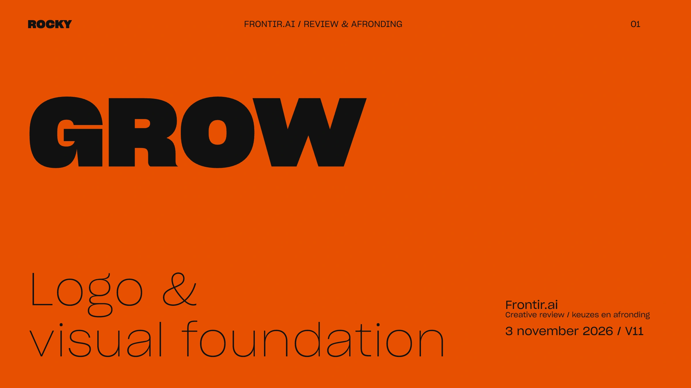

ROCKY
.
Frontir / Grow
Creative review · v11
PDF ↓

Deze slide kon niet laden.
Opnieuw proberen
Grow
Open live preview ↗
← → bladeren
·
F fullscreen
·
O overzicht
Alle slides
Sluiten ×
Slide tekst
Sluiten ×
Schakel JavaScript in voor de viewer, of
open de PDF
.